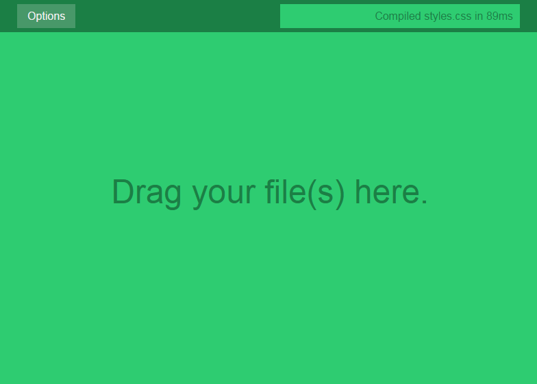

StylusGUI
GUI for Stylus compiling

Quick Start
- 1. Choose options:
- Compile To:
- Same Folder: CSS output is in same directory as Stylus file(s)
- CSS Folder: Goes up a directory and outputs to a CSS folder
- Choose: Choose a custom folder to output to
- Watch Folder?:
- Yes: Choose a folder to watch (compile on file change)
- CSS Options:
- Minify CSS: Choose if you want to minify your css (remove whitespace)
- Autoprefix CSS: Choose if you want to automatically add vendor-prefixes
- 2. Drag and drop stylus file(s) onto the app or save a file (if watch is enabled).
- 3. Enjoy!
Releases
Windows 64 Bit